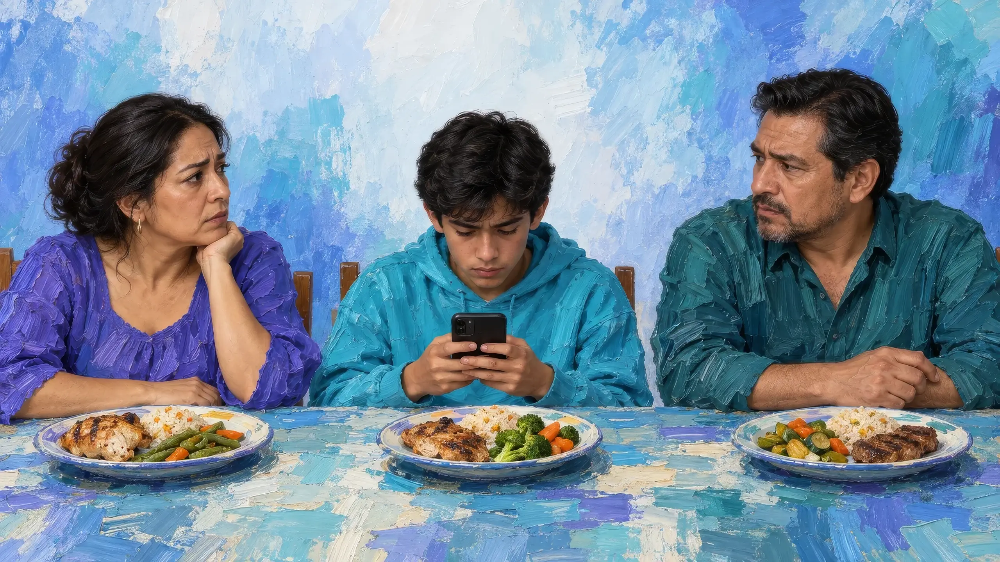
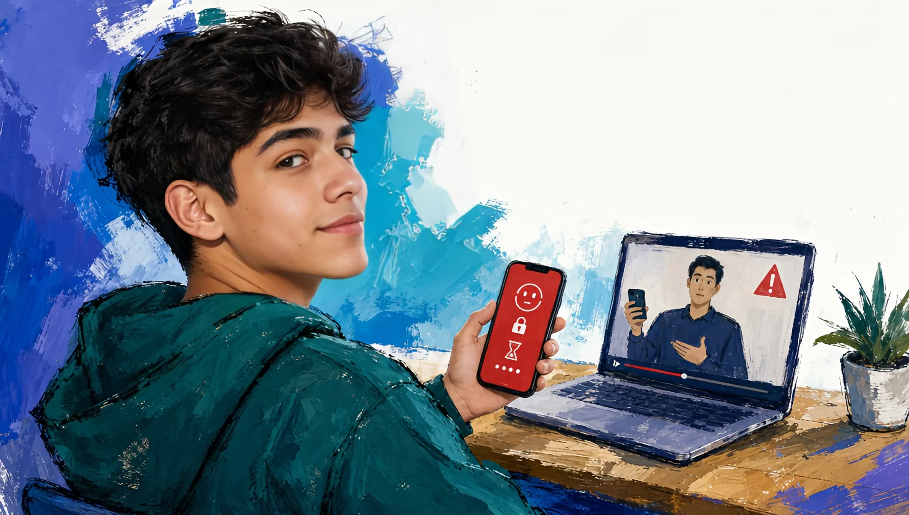
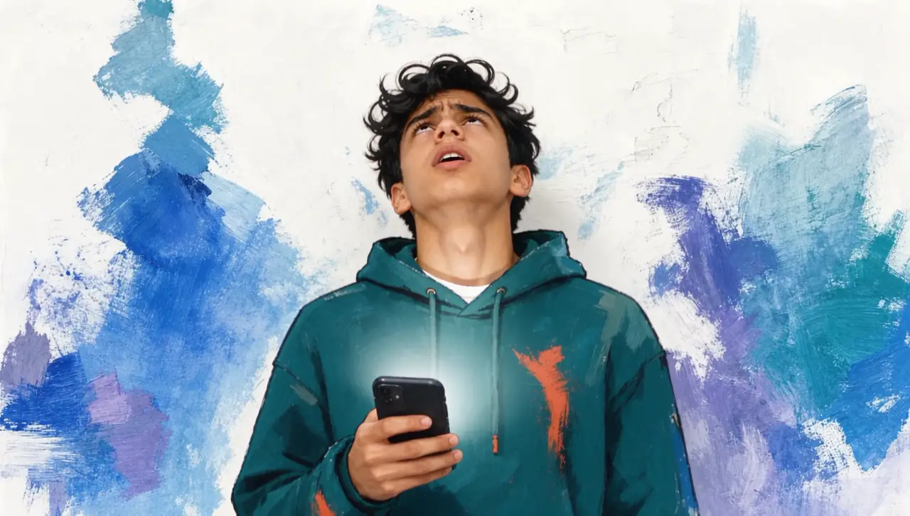
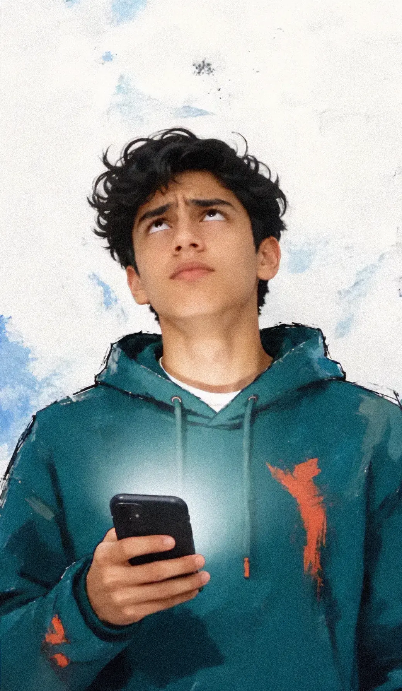
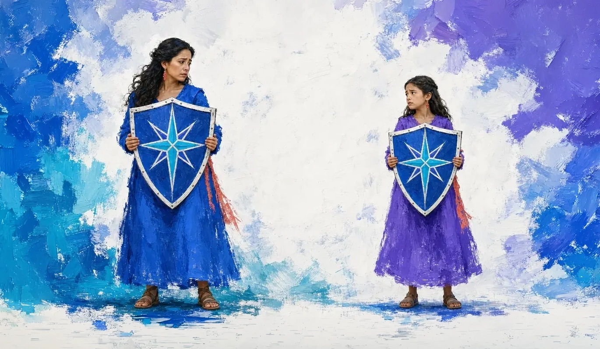
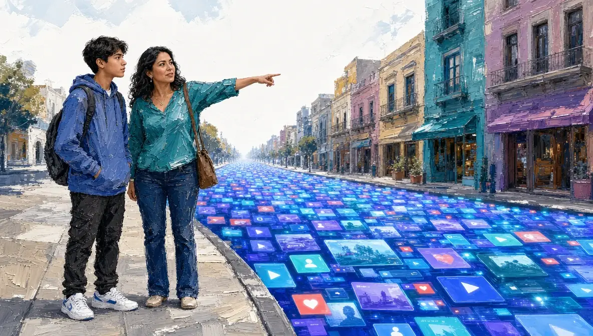
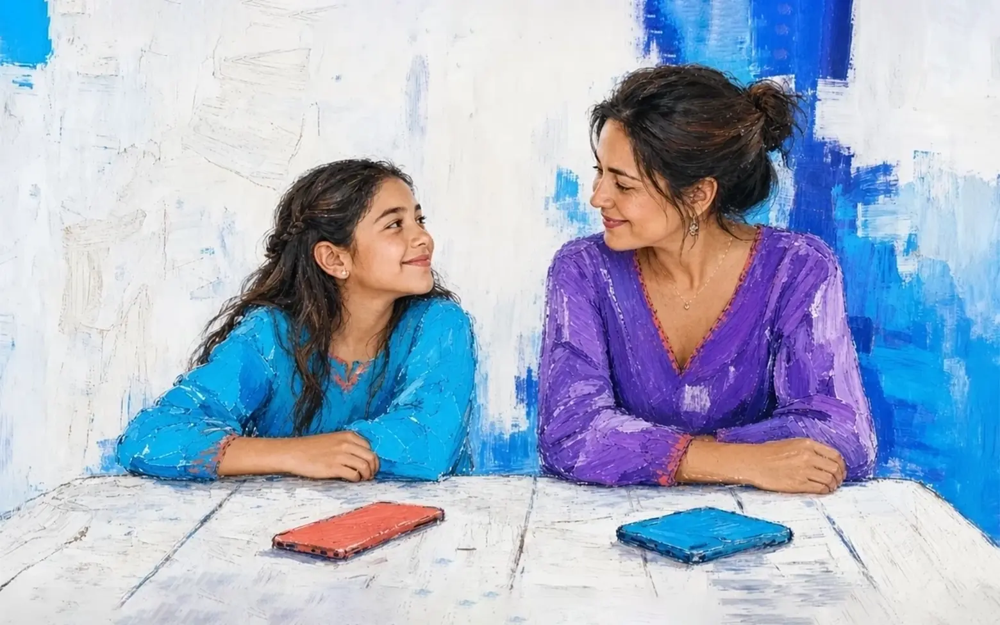

Te voy a decir cinco cosas que crees sobre tu hijo y el celular.
Cuatro son falsas.
Y sé cuál te va a doler.
Esto te va a doler un poco. Y te va a servir mucho.
Lo que casi todos creemos
El problema es cuánto tiempo pasa en el celular.
Si configuro bien la app de control (Family Link, Tiempo en pantalla), se acaba el problema.
Si le pongo contraseña, se acaba el problema.
Los chavos de hoy son más hábiles que uno. Ya perdí.
No me escucha.
Ahora te digo cuál es la verdad.
La cinco.
No te escucha.
Pero no por lo que crees.
Y ahí es donde se pone interesante.
Las cuatro falsas, una por una
«El problema es el tiempo.»
Eso ya lo intentaste medir. Negociaste «una hora y ya». Y cuando por fin cumplía la hora, ¿se sentía resuelto? Una mamá nos lo dijo así, y no se nos ha borrado:
«Ni siquiera me mira a los ojos.»
Eso no se mide en minutos.
«Si configuro bien la app de control…»
Un papá escribió esto en una reseña de Family Link: «falsa sensación de control». No lo escribió un experto. Lo escribió alguien que ya lo configuró bien.
«Si le pongo contraseña, se acaba el problema.»
La frase que más hemos escuchado, de papás distintos, en ciudades distintas: «en dos días encontró cómo saltárselo». Tu hijo tiene todo el día para resolver un acertijo que tú revisas dos minutos en la noche. No es mala suerte. Es aritmética.
«Ya perdí.»
Ésta es la más cómoda de las cuatro, porque si ya perdiste, no tienes que hacer nada. Aguanta. Ahorita llegamos ahí.

Ahora, un favor.
Acuérdate de lo que acabas de leer sobre el candado.
¿Qué sentiste?
No fue enojo. Apuesto a que fue otra cosa: esa angustia de «ya lo sé… ¿y entonces qué hago?». Ver a tu hijo ahí, con el celular, y no saber qué más hacer.
Quédate con eso un segundo. Porque te acabo de hacer exactamente lo que tú le haces a él.
Ahora acuérdate de la cara de tu hijo la quinta vez que le dijiste «ya deja el cel».
Los ojos al techo. En señal de fastidio.


No siente lo mismo que tú. Tú sientes angustia. Él ya está harto de oírlo. Pero los dos están parados en el mismo lugar:
Alguien les dijo «no», y nadie les dijo «cómo».
Yo te dije «el candado no sirve» y no te di nada a cambio. Tú le dices «deja el cel» y tampoco. Y con un «no» no se construye nada. Ni criterio, ni conversación. Solo un hijo que busca el «cómo» por su cuenta. Y lo encuentra: en dos días. Solo que fue el cómo saltárselo.
Por eso «no me escucha» era la única verdadera.
Pero la razón no es que sea rebelde. Es que un «no» sin «cómo» no le deja nada que hacer. Y a un «no» sin «cómo» nadie responde con criterio. Se responde con un candado abierto en dos días.

Antes de seguir: no eres mala mamá ni mal papá.
Lo digo en serio, y lo digo como papá que también trae el celular en la mano todo el día.
A ti te tocó un mundo de calles y bicicletas. A tu hijo le tocó uno que se inventa cada mañana, que nadie te enseñó a leer, y que cambió las reglas mientras tú trabajabas para darle de comer. Nadie te dio el manual. Tus papás no estaban preparados. Tampoco el papá de junto.
Todo lo que has hecho, quitar, vigilar, negociar, lo hiciste por amor. Por eso duele que no funcione.
Tu instinto no está roto. Te ayudó a resolver otros problemas. Éste necesita algo distinto.
Suéltate la culpa. Necesitas espacio para lo que sigue.
Ahora sí: el «cómo». Y ya lo sabes hacer.
Te pongo un ejemplo.
Piensa en algo que parece no tener nada que ver con el celular: cruzar la calle.
Al principio le das la mano. Te detienes con él. Miras a los dos lados. Le explicas por qué ese coche, aunque esté lejos, importa. No lo haces para llevarlo de la mano hasta los cuarenta. Lo haces para que un día cruce sin ti.
Ahora imagina que la única lección hubiera sido: «No cruces.»
Funciona mientras estás en la esquina. Y el día que tiene que cruzar solo, se para en la banqueta sin saber mirar. Nadie le enseñó. Solo le dijeron que no.
Bloquearle el celular es
«no cruces».

Y el día en que cruce solo va a llegar. A los 13, a los 17, a los 25, en un mundo que ni tú ni yo podemos imaginar todavía.
El control caduca.
El criterio no.
Ese día, lo único que va a cruzar la calle con él es
lo que le hayas enseñado antes.
¿Y cómo se enseña a mirar a los dos lados?
Aquí viene la parte que casi nadie quiere oír, porque es más lenta que un candado.
Acuérdate del «no» sin «cómo». Ya viste lo difícil que es escuchar cuando uno está a la defensiva. Entonces, ¿cómo entra?
Piensa en la última vez que tú cambiaste de opinión sobre algo importante. Apuesto a que no fue porque alguien te gritó. Fue porque alguien te hizo una pregunta que te quedaste pensando en el coche, de regreso a la casa.
El criterio se construye con preguntas. No con «deja el cel». Con «¿quién hizo este video y qué quiere de ti?». Con «¿esto te sirve, o te está usando?». Con «¿qué crees que siente la persona de esa foto?».
Esas preguntas no salen en un sermón de domingo que él ya dejó de oír. Salen en una conversación. En su idioma. En el momento en que está pasando.
Y ahí está el problema práctico: tú no puedes estar ahí en cada momento. Ni yo. Nadie.
Pero sí hay alguien que puede estar ahí cada vez que él practique. Todas las veces que haga falta.
Esto se llama ADA.
Tu hijo entra a la página de Digizen y ahí conversa con ADA: un mentor de inteligencia artificial que le habla en su idioma, uno a uno. Y conversa como conversa con sus amigos: por mensajes, a su ritmo. Sin un adulto mirando por encima del hombro. Sin nadie que lo juzgue por lo que pregunta.
No es un salón de clases. No es un robot que suelta tareas. No es un Kumon digital. Y no es un vigilante metido en su celular leyendo sus chats. Eso rompería su confianza, y la tuya.
Es un lugar al que va a entrenar el criterio. ADA lo lleva, conversando, a ver cómo funciona lo digital por dentro: cómo un video está hecho para convencerlo, por qué le cuesta dejar de ver videos, qué siente antes y después de pasar un rato en redes. Y en vez de decirle qué hacer, le hace la pregunta. La que se queda pensando de regreso a casa.
Una pregunta que abre otra puerta
— Conversación de ejemplo
Antes de decidir si la compartes: ¿qué crees que siente la persona de la foto?
Pues pena. Pero yo no la tomé.
Es cierto. ¿Y qué cambia para él si tú la mandas a otro grupo?
Que la ve más gente. Yo también lo estaría haciendo más grande.
Una pausa.
Una consecuencia.
Una idea propia.
Lo que construye ahí adentro se lo lleva puesto a sus juegos, a sus chats, a su vida. Y empieza a cruzar de
«lo que veo en redes me dice quién soy»
«yo decido qué me sirve y qué quiero compartir».
Te lo digo derecho: ADA está viva y está creciendo. Tu hijo empieza con ella el día que lo inscribas, y las familias que entran ahora la moldean: lo que tu familia necesite se construye primero. No te pido que confíes en una promesa bonita. Más abajo te explico cómo hablar tú con ADA antes de pagar un peso.
«Espera. ¿Una IA hablando con mi hijo?»
Sí. Y si has leído las noticias sobre inteligencia artificial y algo en ti se cerró, tienes razón en desconfiar. Nosotros también las leemos. Y también nos preocupan. Por eso ADA existe.
Hay aplicaciones que simulan amistades o relaciones románticas. Common Sense Media advirtió en 2025 que los compañeros de inteligencia artificial presentaban riesgos inaceptables para menores. ADA tiene un propósito educativo: ayudarle a pensar y a tomar sus propias decisiones. No está planteada como pareja, terapeuta ni sustituto de las personas que lo acompañan.
Pero hay un dato que quiero que te lleves en la cabeza:
7 de cada 10
adolescentes ya conversan con inteligencias artificiales. Solos, sin reglas, en plataformas hechas para adultos. México es tercer lugar mundial en adopción juvenil de IA.
No es que vaya a pasar. Ya está pasando.
Lo único que queda por decidir es cuál: una IA hecha para adultos, o una hecha para tu hijo, con reglas y con tu participación.
ADA es lo segundo, por diseño:
Cero rol romántico.
Cero secretos peligrosos. Sus reglas están escritas y las vas a poder leer antes de empezar: qué hace ADA y qué no.
Conocer las reglas de ADA ↗Tú también participas.
Recibes su avance, qué está construyendo, qué está aprendiendo a decidir, sin espiar sus conversaciones. Un hijo espiado deja de hablar. Y si algo de lo que dice indica que necesita ayuda de un adulto, te avisamos. ADA puede equivocarse: no diagnostica ni garantiza detectarlo todo. Antes de empezar vas a saber exactamente en qué casos te llega ese aviso.
Práctica y breve
Con un tiempo definido para cada conversación. ADA no quiere sus horas. Quiere su criterio.
ADA es lo segundo, por diseño:
Cero rol romántico.
Cero secretos peligrosos. Sus reglas están escritas y las vas a poder leer antes de empezar: qué hace ADA y qué no.
Conocer las reglas de ADA ↗Tú también participas.
Recibes su avance, qué está construyendo, qué está aprendiendo a decidir, sin espiar sus conversaciones. Un hijo espiado deja de hablar. Y si algo de lo que dice indica que necesita ayuda de un adulto, te avisamos. ADA puede equivocarse: no diagnostica ni garantiza detectarlo todo. Antes de empezar vas a saber exactamente en qué casos te llega ese aviso.
Práctica y breve
Con un tiempo definido para cada conversación. ADA no quiere sus horas. Quiere su criterio.
Y la prueba no te la pido por fe.
Habla tú con ADA primero.
Pide tu acceso al final de esta página para conversar tú con ADA antes de inscribir a tu hijo. Interrógala. Trata de sacarla de sus reglas. Pregúntale lo que un niño le preguntaría. Pregúntale qué no va a hacer nunca con tu hijo. Te va a contestar sin rodeos.
Queremos que conozcas a la inteligencia artificial con la que hablará tu hijo antes de pagar. Por eso la ponemos por delante.
Si no, sigue leyendo; falta lo más importante.
Lo más importante no es ADA.
Eres tú.
Esto no es una app que le instalas en el teléfono y te olvidas. Los incluye a los dos.
Tú no quedas afuera vigilando. Quedas adentro, del lado de tu hijo, enseñándole a cruzar mientras todavía puedes caminar a su lado. Al terminar cada sesión, él revisa un resumen de lo que pensó y decide compartírtelo. Y a ti te llega algo mejor que «hoy estuvo en el celular»: un tema real para la cena.
«Oye, ¿a ti te ha tocado ver algo así en un grupo?»
Quizá te cuenta. Quizá hoy no. Pero la puerta queda abierta, y no es un interrogatorio.
Y aquí pasa algo que no te esperas. Cuando dejas de ser tú-contra-la-pantalla, se vuelven ustedes dos, del mismo lado.
El criterio que lo cuida es el mismo puente que te lo regresa.
Un niño, en otra parte, dijo esto. Léelo despacio:
«Mi mamá se ríe más cuando ve el celular que cuando está conmigo.»
Esa pausa antes de decidir no es solo para él. Con lo que te comparte, y con SAFE, los cursos breves para mamás y papás que van incluidos, tú también vas entrenando el tuyo: qué preguntar, cuándo escuchar, cómo acompañar sin interrogar. Él aprende a mirar a los dos lados. Tú aprendes a caminar a su lado.

Inscríbelo hoy. Generación Fundadora.
Hay algo que hace más sencillo empezar: no hay grupo que esperar, ni temporada, ni lista. Pagas hoy y ADA se presenta con tu hijo hoy mismo. Su ciclo de 12 meses empieza el día que ustedes deciden, no el día que a un calendario le conviene.
Doce meses, no diez: el verano va incluido, porque las redes no salen de vacaciones.
Tu inscripción fundadora incluye:
ADA, su mentor personal, todo el ciclo.
Uno a uno, por mensajes, en su idioma. Un espacio para conversar, hacer preguntas y practicar decisiones con ayuda de la inteligencia artificial.
Cada semana pasa algo.
Una semana ADA le trae un tema nuevo, pensado para su etapa y para lo que usa a su edad. La siguiente, lo pone a prueba con una situación real. Veinte temas a lo largo del ciclo. Para él, misiones.
Y entre semana, para lo que traiga.
Le mandaron algo raro, un juego le pidió dinero, no sabe si algo es cierto: se lo cuenta y ADA le hace las preguntas para que él decida.
Un resumen de su avance.
Ves su avance sin vigilarlo.
SAFE gratis todo el ciclo.
Los cursos breves de Gnius Club para mamás y papás.
Código de descuento en Alquimistas de I.A.
El curso para aprender a usar inteligencia artificial en tu trabajo, para ti. Tu hijo entrena criterio; tú entrenas tu ventaja.
Precio fundador congelado cuando lo reinscribas al siguiente nivel.
Nunca te sube mientras sigas.
Tu inscripción fundadora incluye:
ADA, su mentor personal, todo el ciclo.
Uno a uno, por mensajes, en su idioma. Un espacio para conversar, hacer preguntas y practicar decisiones con ayuda de la inteligencia artificial.
Cada semana pasa algo.
Una semana ADA le trae un tema nuevo, pensado para su etapa y para lo que usa a su edad. La siguiente, lo pone a prueba con una situación real. Veinte temas a lo largo del ciclo. Para él, misiones.
Y entre semana, para lo que traiga.
Le mandaron algo raro, un juego le pidió dinero, no sabe si algo es cierto: se lo cuenta y ADA le hace las preguntas para que él decida.
Un resumen de su avance.
Ves su avance sin vigilarlo.
SAFE gratis todo el ciclo.
Los cursos breves de Gnius Club para mamás y papás.
Código de descuento en Alquimistas de I.A.
El curso para aprender a usar inteligencia artificial en tu trabajo, para ti. Tu hijo entrena criterio; tú entrenas tu ventaja.
Precio fundador congelado cuando lo reinscribas al siguiente nivel.
Nunca te sube mientras sigas.
El programa va de tercero de primaria a tercero de prepa. Tu hijo arranca en el primer nivel de su sección y cada año sube uno.
¿Cuánto cuesta y cómo se paga?
El ciclo completo de 12 meses cuesta $5,990. Es un solo precio. No hay cuota de inscripción aparte ni cargos escondidos. Tú eliges cómo pagarlo:
Todo hoy, de una vez: $4,990.
Te ahorras $1,000 por pagarlo completo. Es el precio fundador y vale hasta el 31 de octubre.
En 10 pagos mensuales de $599.
Son los mismos $5,990, divididos en diez. Terminas de pagar en el mes diez; ADA sigue con tu hijo hasta el doce.
El programa va de tercero de primaria a tercero de prepa. Tu hijo arranca en el primer nivel de su sección y cada año sube uno.
¿Cuánto cuesta y cómo se paga?
El ciclo completo de 12 meses cuesta $5,990. Es un solo precio. No hay cuota de inscripción aparte ni cargos escondidos. Tú eliges cómo pagarlo:
Todo hoy, de una vez: $4,990.
Te ahorras $1,000 por pagarlo completo. Es el precio fundador y vale hasta el 31 de octubre.
En 10 pagos mensuales de $599.
Son los mismos $5,990, divididos en diez. Terminas de pagar en el mes diez; ADA sigue con tu hijo hasta el doce.
En los dos casos tu hijo empieza hoy y tiene el ciclo completo. No es una suscripción: es el ciclo entero, pagado de una vez o en diez partes.
Y una garantía que nadie más da: pruébalo un mes. Los 30 días cuentan desde la primera conversación de tu hijo con ADA, no desde que pagas. Si no es para ustedes, cancelas en un clic y no pagas. Sin llamadas de venta. Sin letras chicas.
Una última cosa, y ya te dejo.
Al principio te dije un «no» y te debí el «cómo» un buen rato.
Ya lo tienes.
Ahora te toca dárselo a él. Ésa es la lección completa. Lo demás son detalles.
No inscribirlo también es una decisión. La diferencia es que ésa no tiene botón de cancelar.
No te lo digo para asustarte; te la digo porque el día en que cruce solo va a llegar de todos modos, y lo único que cambia es si llega sabiendo mirar.
Presencia, no vigilancia.
Criterio, no candado.
Por si te quedó una duda.
¿Para qué edades es Digizen?
De tercero de primaria a tercero de preparatoria. Tu hijo arranca en el primer nivel de su sección (primaria, secundaria o prepa) y cada año sube uno. Los temas están pensados para su etapa y para lo que usa a su edad.
¿Qué hace mi hijo cada semana?
Una semana ADA le trae un tema nuevo, pensado para su etapa (para él, una misión). La siguiente, lo pone a prueba con una situación real. Son veinte temas a lo largo del ciclo. Y entre semana, ADA está para lo que traiga: algo raro que le mandaron, un juego que le pidió dinero, una duda de si algo es cierto.
¿Voy a poder leer todo lo que habla mi hijo con ADA?
Recibes su avance, los temas que ha visto y un resumen que él revisa antes de compartirlo contigo. No recibes una copia de toda la conversación. Antes de empezar se explican los avisos ante situaciones que puedan necesitar ayuda de un adulto.
¿Hay que pagar inscripción y además mensualidades?
No. El ciclo completo cuesta $5,990 y es un solo precio, sin cuota de inscripción aparte. Lo pagas todo hoy ($4,990 con el precio fundador) o en diez pagos mensuales de $599. Nunca las dos cosas.
¿Los diez pagos son una suscripción?
No. Son los mismos $5,990 divididos en diez. Terminan en el mes diez; ADA sigue con tu hijo hasta el doce.
¿Cómo funciona la garantía?
Pruébalo un mes. Los 30 días cuentan desde la primera conversación de tu hijo con ADA, no desde que pagas. Si no es para ustedes, cancelas en un clic y no pagas. Sin llamadas de venta.
¿Puedo conocer a ADA antes de pagar?
Sí, el recorrido contempla que tú converses con ADA primero. Usa el botón «Conversar con ADA primero» al final de la historia para ver la solicitud de acceso.